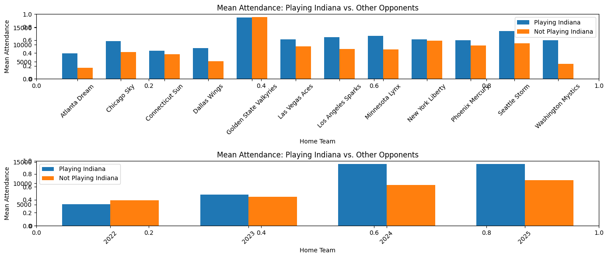

Overview
This project, completed as my final project for INFO-I369, explores how Caitlin Clark, a standout college basketball player, influences WNBA attendance. I also analyzed Google Trends data to understand how social media recognition may affect fan engagement. By combining sports analytics with digital trends, the project quantifies her impact on professional women's basketball viewership.
My role
I was responsible for data collection, preprocessing, and analysis — scraping HTML pages and APIs for attendance and social media data, building graphs to display trends, and running linear regression to determine the relationship between Caitlin Clark's presence and WNBA attendance. I interpreted the statistical results and presented the final findings as part of the course's capstone project.
Skills demonstrated
Web Scraping Data Cleaning Data Visualization Linear Regression Python